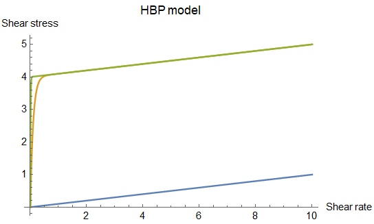
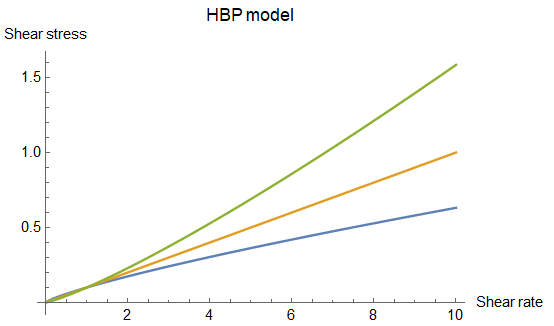
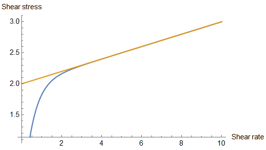
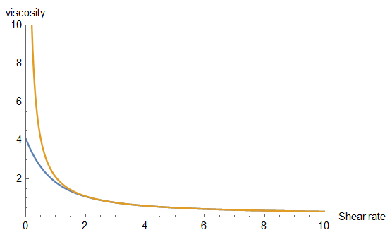

Multiphase non-Newtonian¶
Under review by Georgios Fourtakas
Phase-dependent fluid properties, Herschel–Buckley–Papanastasiou rheology and the bi-viscosity alternative.
Scope and software context¶
The multiphase non-Newtonian formulation described here is the specialised DualSPHysics v5.0 non-Newtonian module, documented in July 2020. It represents fluids with phase-dependent density and rheological properties. A phase identifies a material population; a non-Newtonian constitutive model describes how its response changes with deformation. Several phases can therefore have different properties without every phase necessarily exhibiting non-Newtonian behaviour.
The available module documentation describes the Herschel–Buckley–Papanastasiou (HBP) formulation and a Bingham bi-viscosity alternative. It also distinguishes two velocity-gradient approximations and alternative viscous-force operators. These choices describe different parts of the numerical formulation and must be considered together.
The XML examples below retain the conventions of that module. They are not established executable configurations for the principal DualSPHysics v6 solver. In particular, the module-specific constitutive-force selector must not be replaced by a similarly numbered v6 viscosity option: the meanings differ. A compatible module version and its corresponding configuration specification are required before using these examples with another release.
Phase assignment and material properties¶
Linking materials to particle blocks¶
Phase definitions belong to case/execution/special/nnphases. Each lowercase phase element has a mkfluid attribute that associates its material properties with the fluid block created by the corresponding setmkfluid command in case/casedef/geometry/commands/mainlist.
The following two excerpts illustrate that association in the documented v5.0 configuration. They show selected geometry commands and their corresponding phase definitions, rather than a complete case.
XML excerpt — phase-geometry. Historical module context; XML location: case/casedef/geometry/commands/mainlist. Source: July 2020 module description.
<setmkfluid mk="0" />
<drawbox>
<boxfill>solid</boxfill>
<point x="0" y="0" z="0" />
<size x="4" y="2" z="0.5" />
</drawbox>
<setmkfluid mk="1" />
<drawbox>
<boxfill>solid</boxfill>
<point x="0" y="0" z="0.50" />
<size x="1" y="2" z="0.25" />
</drawbox>
XML excerpt — two-phase-definition. Historical module context; XML location: case/execution. Source: July 2020 module description.
<special>
<nnphases>
<phase mkfluid="0">
<rhop value="1000" />
<visco value="0.2" />
<tau_yield value="0.0001" />
<HBP_m value="100" />
<HBP_n value="2" />
<phasetype value="0" />
</phase>
<phase mkfluid="1">
<rhop value="1000" />
<visco value="0.1" />
<tau_yield value="0.001" />
<HBP_m value="10" />
<HBP_n value="1" />
<phasetype value="0" />
</phase>
</nnphases>
</special>
mkfluid="0" and mkfluid="1" refer to the two fluid blocks; they are not a count of all supported phases. Geometry, boundary particles, constants and execution controls still have to be supplied by the surrounding case. The reference uses phasetype=0 and describes it as the only non-Newtonian phase type available in the documented historical module; this does not define an enumeration for other releases.
Density and equation-of-state properties¶
Element within phase |
Documented meaning | Context |
|---|---|---|
rhop |
Density of the phase | The reference and cases use rhop |
csound |
Phase speed of sound, m/s | Optional; otherwise the value calculated by GenCase is used |
gamma |
Polytropic index in the equation of state | Optional; otherwise the value in constantsdef is used |
phasetype |
Phase-model selector | The documented historical module provides value 0 |
The module description uses the phase-specific sound speed when obtaining pressure from the equation of state, but uses the maximum sound speed across the phases in the CFL time-step restriction. Specifying a smaller sound speed for one phase therefore does not remove the restriction imposed by a faster phase.
XML excerpt — phase-eos-properties. Historical module context; XML location: case/execution/special/nnphases/phase. Source: doc/xml_format/_FmtXML_MphaseNNewtonian.xml.
<rhop value="1000" comment="Density of the phase" />
<csound value="80" comment="Speed of sound for phase (m/s)" />
<gamma value="7" comment="Gamma polytropic index value for phase" />
These are property elements inside a phase, not separate execution parameters. The original module description does not recommend density ratios greater than two. This recommendation belongs to that formulation and should not be interpreted as a general limit for every multiphase method or software release. The supplied documentation does not establish an interface reconstruction scheme, a mixture law or a general maximum phase count.
Herschel–Buckley–Papanastasiou rheology¶
Material parameters¶
The HBP description uses four principal material parameters: viscosity or consistency, specific yield stress, the flow index and the exponential stress-growth parameter.
| Element | Meaning in the module documentation | Interpretation |
|---|---|---|
visco |
Kinematic viscosity or consistency index | A phase property, distinct from the global execution parameter Visco |
tau_yield |
Specific yield stress | Yield stress divided by density |
HBP_m |
Papanastasiou exponential stress-growth parameter | Controls the regularisation of the yield contribution; the reference gives seconds |
HBP_n |
Herschel–Buckley flow index | 1 gives a linear contribution; values below or above 1 describe shear thinning or shear thickening |
The specific-yield-stress convention is
The reference expresses its units as Pa m³/kg. A dimensional yield stress must therefore not be inserted directly in a field defined as a specific stress. The reference labels visco as m²/s while also using the term consistency index. It does not establish the general dimensional convention for non-unit flow index; that label alone is insufficient to define a conversion for a material with \(n\ne1\).
This historical material-property excerpt retains the values in the documented HBP example.
XML excerpt — hbp-material. Historical module context; XML location: case/execution/special/nnphases/phase[@mkfluid="0"]. Source: July 2020 module description.
<visco value="0.2" />
<tau_yield value="0.0001" />
<HBP_m value="100" />
<HBP_n value="2" />
<phasetype value="0" />
Stress-growth parameter¶
The documented comparison varies \(m\) between 0, 10 and 100. Increasing this parameter changes the regularised response near yielding. The chart labels describe the illustrated curves; they do not make HBP_m a universal switch between complete constitutive models independently of the other parameters.

| Illustrated value | Curve | Label in the documented comparison | Interpretation of the comparison |
|---|---|---|---|
| \(m=0\) | Blue | Newtonian | The yield regularisation contribution is suppressed; a Newtonian reduction also requires the linear flow-index setting |
| \(m=10\) | Gold | Power law | Finite stress-growth example; the accompanying description also refers to pseudo-Bingham behaviour |
| \(m=100\) | Green | Bingham | A sharper regularised yield response in the illustrated configuration |
A statement that setting \(m=0\) alone makes every possible HBP parameter combination Newtonian would be too broad. Yield stress, flow index and consistency remain part of the material definition.
Flow index¶
HBP_n controls the flow-index dependence. The documented comparison uses \(n=0.8\), \(n=1\) and \(n=2\).

| Illustrated value | Curve | Documented response |
|---|---|---|
| \(n=0.8\) | Blue | Shear thinning |
| \(n=1\) | Gold | Newtonian comparison / linear contribution |
| \(n=2\) | Green | Shear thickening |
These plots are schematic comparisons, not tabulated calibration data or validation results for a particular material. Their interpretation depends on the remaining HBP settings. The distinction between HBP_m and HBP_n follows the actual XML elements: the former controls exponential stress growth and the latter is the flow index.
Bingham bi-viscosity alternative¶
The module documents a bi-viscosity alternative intended to avoid the singularity and large viscosity values of the ideal Bingham model. It uses the following pair of phase properties.
| Element | Documented role | Dependency |
|---|---|---|
tau_max |
Specific Bingham yield-stress quantity | Used together with Bi_multi |
Bi_multi |
Bi-viscosity multiplier | Both elements must be supplied when this alternative is required |
XML excerpt — bi-viscosity-pair. Historical module context; XML location: case/execution/special/nnphases/phase[@mkfluid="1"]. Source: July 2020 module description.
The historical module description presents tau_max and Bi_multi as overriding the Papanastasiou stress-growth setting. This does not establish that a non-zero HBP_m is inactive in every implementation of the bi-viscosity alternative. Its effective role requires confirmation for the selected module build.
The reference comment expresses the multiplier relationship as
The symbols correspond to the reference names tau_bi, tau_max and Bi_multi. This reproduces the relationship named in the reference; it does not define an additional XML element or a complete piecewise viscosity law. The source description refers to multiplication in the yielded region, but does not provide enough mathematical detail to reconstruct all regions or threshold conventions from that statement alone.
Stress and viscosity near the origin¶
The documented comparison contrasts the ideal Bingham response with the regularised HBP response. The ideal Bingham apparent viscosity becomes singular as shear rate approaches zero, whereas the illustrated HBP curve remains finite at the origin.


In both comparisons, the gold curve represents the ideal Bingham response and the blue curve represents the regularised HBP response.
The finite value shown is a property of the illustrated regularised comparison. It is not evidence of a finite zero-shear viscosity for every possible flow index or every parameter combination. The available description supplies these response curves and parameter meanings, rather than a complete analytical HBP equation or a detailed SPH constitutive-stress discretisation.
Numerical operators and time-step control¶
Velocity gradients and viscous forces¶
The v5.0 module separates the rheology treatment, velocity-gradient calculation and viscous-force evaluation.
| Execution parameter | Documented module options | Qualification |
|---|---|---|
RheologyTreatment |
1: single-phase classic; 2: single and multiphase | The historical presentation restricts the implementation to option 2, despite the reference listing both |
VelocityGradientType |
1: pairwise finite-difference approach; 2: symmetric SPH gradient | A gradient choice, distinct from the viscous-force operator |
ViscoTreatment |
1: artificial viscosity; 2: laminar/Morris operator, labelled Laminar+SPS in the XML; 3: full constitutive equation | Artificial viscosity is described for Newtonian fluids only |
RelaxationDt |
Relaxation parameter for the viscous time-step restriction | The module reference gives 0.2 as its default; examples may use other values |
The method description associates the laminar viscous force with the Morris (1997) operator and distinguishes it from evaluation through the full constitutive equation using SPH. Selecting the same velocity-gradient approximation does not make these force formulations equivalent. The source does not provide a complete governing-equation or boundary-discretisation specification, so no additional stress law, integration guarantee or boundary combination is implied here.
The following controls are an exact selection from the non-Newtonian Poiseuille case for the specialised module.
XML excerpt — module-solver-controls. Historical module context; XML location: case/execution/parameters. Source: examples/mphase_nnewtonian/05_Poiseuille/CasePoiseuilleNN_Def.xml.
<parameter key="RheologyTreatment" value="2" comment="Reology formulation 1:Single-phase classic, 2: Single and multi-phase" />
<parameter key="VelocityGradientType" value="1" comment="Velocity gradient formulation 1:FDA, 2:SPH" />
<parameter key="ViscoTreatment" value="2" comment="Viscosity formulation 1:Artificial, 2:Laminar+SPS, 3:Constitutive eq." />
<parameter key="RelaxationDt" value="0.2" comment="Relaxation parameter for the viscous time step restricition(default=0.2)" />
The principal v6 parameter reference instead documents ViscoTreatment using LAM and ART, with turbulence configured separately. Its treatment of old numerical options does not establish an equivalent non-Newtonian constitutive formulation. In particular, the module's option 3 must retain its original meaning when interpreting historical cases.
Viscous time-step relaxation¶
The documented relaxation relationship is
For the illustrated RelaxationDt=0.2, this gives \(\lambda=5\). The presentation identifies this as part of the viscous-force time-step restriction, but does not specify a complete restriction formula. It must not be treated as a fixed time step or as a complete CFL condition.
The Newtonian Poiseuille comparison uses a different value:
XML excerpt — newtonian-relaxation. Historical module context; XML location: case/execution/parameters. Source: examples/mphase_nnewtonian/05_Poiseuille/CasePoiseuille_Def.xml.
<parameter key="RelaxationDt" value="1.0" comment="Relaxation parameter for the viscous time step restricition(default=0.2)" />
That case-specific value is preserved here. It is not a recommendation to replace the non-Newtonian case's 0.2 by 1.0.
Historical example configurations¶
The examples in this section are supplied for the specialised v5.0 module. They illustrate material definitions and operator choices; they do not establish execution compatibility with the principal v6 solver. Each excerpt requires its original surrounding geometry, constants, boundary configuration and execution settings.
Two-layer Poiseuille flow¶
The package directory examples/mphase_nnewtonian/05_Poiseuille/ contains CasePoiseuille_Def.xml and CasePoiseuilleNN_Def.xml. Both define two fluid blocks with density 1000 and visco=0.1, driven by an x-directed acceleration of 0.1 m/s². Their initial particle spacing is 0.025 m.
XML excerpt — poiseuille-driving. Historical module context; XML location: case/casedef/constantsdef. Source: examples/mphase_nnewtonian/05_Poiseuille/CasePoiseuilleNN_Def.xml.
| Input | mkfluid |
tau_yield |
HBP_m |
HBP_n |
RelaxationDt |
|---|---|---|---|---|---|
CasePoiseuille_Def.xml |
0 | 0.000 | 1 | 1 | 1.0 |
CasePoiseuille_Def.xml |
1 | 0.000 | 1 | 1 | 1.0 |
CasePoiseuilleNN_Def.xml |
0 | 0.000 | 1 | 1 | 0.2 |
CasePoiseuilleNN_Def.xml |
1 | 0.04 | 10 | 1 | 0.2 |
The non-Newtonian input changes the second phase's yield and stress-growth properties, and its time-step relaxation also differs. It is therefore not a comparison in which only the material yield stress changes. All four phase entries retain phasetype=0.
Three-phase wet dam break¶
examples/mphase_nnewtonian/01_WetDambreak/CaseWetDambreak2DNN_Def.xml defines three materials with the following properties.
mkfluid |
rhop |
visco |
tau_yield |
HBP_m |
HBP_n |
|---|---|---|---|---|---|
| 0 | 2000 | 0.2 | 0.0001 | 100 | 1.5 |
| 1 | 1500 | 0.1 | 0.001 | 10 | 1 |
| 2 | 1000 | 0.05 | 0.0005 | 0 | 1 |
All three entries use phasetype=0. The density ratio between the densest and least dense phases is two. The source retains a non-zero tau_yield in phase 2 alongside HBP_m=0; neither value has been replaced by an inferred default. The model interpretation must account for the stress-growth setting together with the flow index.
Three-dimensional dam break and bi-viscosity¶
examples/mphase_nnewtonian/02_Dambreak3D/CaseDambreakNN_Def.xml uses two phases. Phase 0 has rhop=1000, visco=0.1, tau_yield=0.001, HBP_m=10 and HBP_n=1.5, together with the following bi-viscosity pair.
XML excerpt — dambreak-bi-viscosity. Historical module context; XML location: case/execution/special/nnphases/phase[@mkfluid="0"]. Source: examples/mphase_nnewtonian/02_Dambreak3D/CaseDambreakNN_Def.xml.
<tau_max value="0.0015" comment="User defined maximum specific yield stress of phase (Pa m3/kg)" />
<Bi_multi value="10.0" comment="tau_max multiplier for use with Bingham model or bi-viscosity model(tau_bi=tau_max*Bi_multi)" />
Phase 1 has rhop=1200, visco=0.01, tau_yield=0.0005, HBP_m=0 and HBP_n=1. Both phases retain phasetype=0. The phase-0 HBP_m value remains in the input; its role in the bi-viscosity alternative requires confirmation for the selected module build.
Other supplied configurations¶
The same specialised-module family also supplies the following inputs. These are examples of different material and operator selections, rather than independently established v6 configurations.
| Package directory and input | Phase markers | VelocityGradientType |
Module ViscoTreatment |
RelaxationDt |
|---|---|---|---|---|
03_LockGate/CaseLockGateNN_Def.xml |
0, 1 | 2 | 3 | 0.2 |
04_SloshingMotion/CaseSloshingMotionNN_Def.xml |
0–4 | 1 | 3 | 0.2 |
06_Impellers3D/CaseImpellersNN_Def.xml |
0–2 | 1 | 2 | 0.5 |
These paths are relative to examples/mphase_nnewtonian/. The lock-gate and sloshing inputs illustrate the historical constitutive-force option 3. The impeller input supplies tau_max and Bi_multi for all three phases. Their different relaxation and rheological values should be retained when examining the original configurations.
Full Multiphase Non-Newtonian XML format reference¶
The directly relevant package reference is doc/xml_format/_FmtXML_MphaseNNewtonian.xml. Its header dates it to 5 April 2020, for DualSPHysics-NNewtonian. The complete text below preserves that historical module reference, including its alternative examples and comments. It is a syntax-and-options source for that module, not a complete executable simulation or a certified v6 configuration.
The reference also contains malformed separator comments, literal less-than signs in attribute text, a missing attribute name in its RelaxationDt line and several alternative top-level blocks. These features are retained verbatim for reference fidelity. Consequently, the complete block is not a well-formed standalone XML document and should not be copied wholesale as a simulation input. The focused excerpts above distinguish selected well-formed elements from this unaltered reference.
<?xml version="1.0" encoding="UTF-8" ?>
<!-- *** DualSPHysics-NNewtonian (05-04-2020) *** -->
<!------------------------------------------------------------------------------->
<!------------------------------------------------------------------------------->
<!-- *** Example for Non Newtonian simulations. *** -->
<execution>
<special>
<nnphases> %Defines non-newtonian phases parameters
<phase mkfluid="0">
<rhop value="1000" comment="Density of the phase" />
<csound value="80" comment="Speed of sound for phase (m/s)" />
<gamma value="7" comment="Gamma polytropic index value for phase" />
<visco value="0.01" comment="Kinematic viscosity (or consistency index) value for phase (m2/s)" />
<tau_yield value="0.0001" comment="Specific yield stress of phase (Pa m3/kg)" />
<tau_max value="0.00001" comment="User defined maximum specific yield stress of phase (Pa m3/kg)" />
<Bi_multi value="10.0" comment="tau_max multiplier for use with Bingham model or bi-viscosity model(tau_bi=tau_max*Bi_multi)" />
<HBP_m value="10" comment="Use 0 to reduce Newtonian liquid, order of 10 for power law and order of 100 for Bingham (sec) " />
<HBP_n value="2" comment="Use 1 to reduce to Newtonian, <1 for shear thinning >1 for shear thickenning " />
<phasetype value="0" comment="Non-Newtonian=0 only option in beta" />
</phase>
</nnphases>
</special>
<parameters>
%Choice of reology treatment, velocity gradient calculation and viscosity treatment
<parameter key="RheologyTreatment" value="2" comment="Reology formulation 1:Single-phase classic, 2: Single and multi-phase (default=1)" />
<parameter key="VelocityGradientType" value="1" comment="Velocity gradient formulation 1:FDA, 2:SPH (default=1)" />
<parameter key="ViscoTreatment" value="2" comment="Viscosity formulation 1:Artificial, 2:Laminar+SPS, 3:Constitutive eq. (default=1)" />
<parameter key="RelaxationDt" value="0.2" "Relaxation parameter for the viscous time step restricition(default=0.2)" />
</parameters>
</execution>
<!------------------------------------------------------------------------------->
<!------------------------------------------------------------------------------->
<!-- *** Example of two phases using power law and Bingham using HBP *** -->
<special>
<nnphases> %Defines non-newtonian phases parameters
<phase mkfluid="0">
<rhop value="1000" comment="Density of the phase" />
<visco value="0.1" comment="Kinematic viscosity (or consistency index) value for phase (m2/s)" />
<tau_yield value="0.1" comment="Specific yield stress of phase (Pa m3/kg)" />
<HBP_m value="5" comment="Use 0 to reduce Newtonian liquid, order of 10 for power law and order of 100 for Bingham (sec) " />
<HBP_n value="1" comment="Use 1 to reduce to Newtonian, <1 for shear thinning >1 for shear thickenning " />
<phasetype value="0" comment="Non-Newtonian=0 only option in beta" />
</phase>
<phase mkfluid="1">
<rhop value="1000" comment="Density of the phase" />
<visco value="0.1" comment="Kinematic viscosity (or consistency index) value for phase (m2/s)" />
<tau_yield value="0.1" comment="Specific yield stress of phase (Pa m3/kg)" />
<HBP_m value="100" comment="Use 0 to reduce Newtonian liquid, order of 10 for power law and order of 100 for Bingham (sec) " />
<HBP_n value="1" comment="Use 1 to reduce to Newtonian, <1 for shear thinning >1 for shear thickenning " />
<phasetype value="0" comment="Non-Newtonian=0 only option in beta" />
</phase>
</nnphases>
</special>
<!------------------------------------------------------------------------------->
<!------------------------------------------------------------------------------->
<!-- *** Example of two phases using Bignham shear thickening and thinning using HBP *** -->
<special>
<nnphases> %Defines non-newtonian phases parameters
<phase mkfluid="0">
<rhop value="1000" comment="Density of the phase" />
<visco value="0.1" comment="Kinematic viscosity (or consistency index) value for phase (m2/s)" />
<tau_yield value="0.1" comment="Specific yield stress of phase (Pa m3/kg)" />
<HBP_m value="100" comment="Use 0 to reduce Newtonian liquid, order of 10 for power law and order of 100 for Bingham (sec) " />
<HBP_n value="1.5" comment="Use 1 to reduce to Newtonian, <1 for shear thinning >1 for shear thickenning " />
<phasetype value="0" comment="Non-Newtonian=0 only option in beta" />
</phase>
<phase mkfluid="1">
<rhop value="1000" comment="Density of the phase" />
<visco value="0.1" comment="Kinematic viscosity (or consistency index) value for phase (m2/s)" />
<tau_yield value="0.1" comment="Specific yield stress of phase (Pa m3/kg)" />
<HBP_m value="100" comment="Use 0 to reduce Newtonian liquid, order of 10 for power law and order of 100 for Bingham (sec) " />
<HBP_n value="0.9" comment="Use 1 to reduce to Newtonian, <1 for shear thinning >1 for shear thickenning " />
<phasetype value="0" comment="Non-Newtonian=0 only option in beta" />
</phase>
</nnphases>
</special>
<!------------------------------------------------------------------------------->
<!------------------------------------------------------------------------------->
<!-- *** Example of two phases using Bignham (bi-viscosity) and Bingham using HBP *** -->
<special>
<nnphases> %Defines non-newtonian phases parameters
<phase mkfluid="0">
<rhop value="1000" comment="Density of the phase" />
<visco value="0.1" comment="Kinematic viscosity (or consistency index) value for phase (m2/s)" />
<tau_yield value="0.001" comment="Specific yield stress of phase (Pa m3/kg)" />
<tau_max value="0.0001" comment="User defined maximum specific yield stress of phase (Pa m3/kg)" />
<Bi_multi value="10.0" comment="tau_max multiplier for use with Bingham model or bi-viscosity model(tau_bi=tau_max*Bi_multi)" />
<HBP_m value="100" comment="Use 0 to reduce Newtonian liquid, order of 10 for power law and order of 100 for Bingham (sec) " />
<HBP_n value="1" comment="Use 1 to reduce to Newtonian, <1 for shear thinning >1 for shear thickenning " />
<phasetype value="0" comment="Non-Newtonian=0 only option in beta" />
</phase>
<phase mkfluid="1">
<rhop value="1000" comment="Density of the phase" />
<visco value="0.1" comment="Kinematic viscosity (or consistency index) value for phase (m2/s)" />
<tau_yield value="0.001" comment="Specific yield stress of phase (Pa m3/kg)" />
<HBP_m value="100" comment="Use 0 to reduce Newtonian liquid, order of 10 for power law and order of 100 for Bingham (sec) " />
<HBP_n value="1" comment="Use 1 to reduce to Newtonian, <1 for shear thinning >1 for shear thickenning " />
<phasetype value="0" comment="Non-Newtonian=0 only option in beta" />
</phase>
</nnphases>
</special>